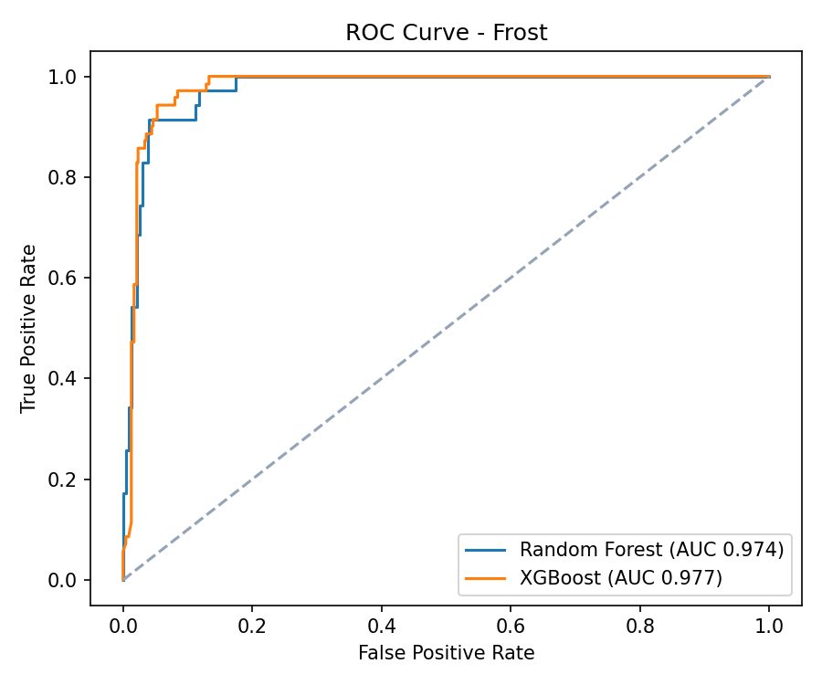
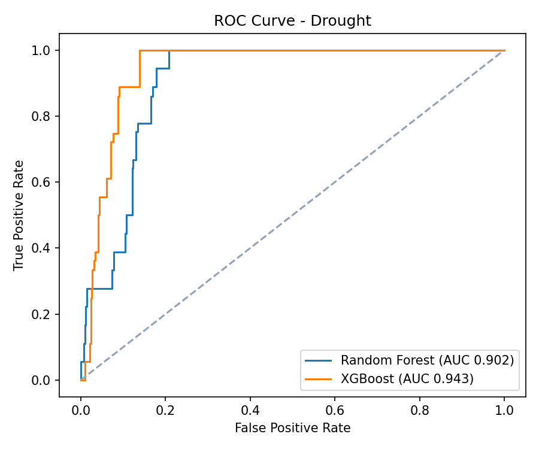
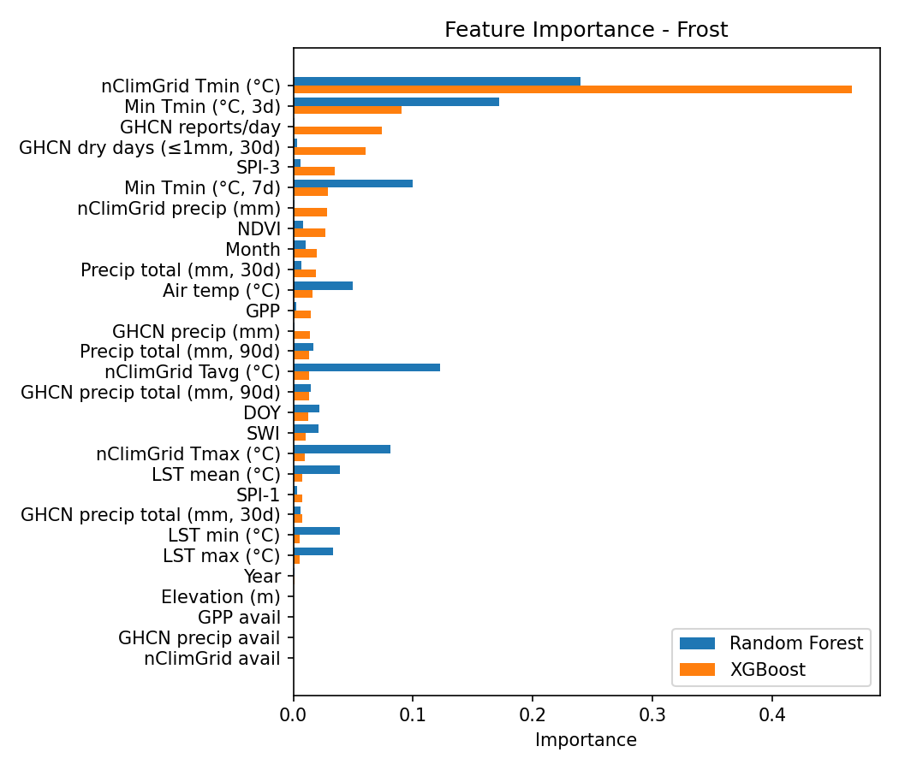
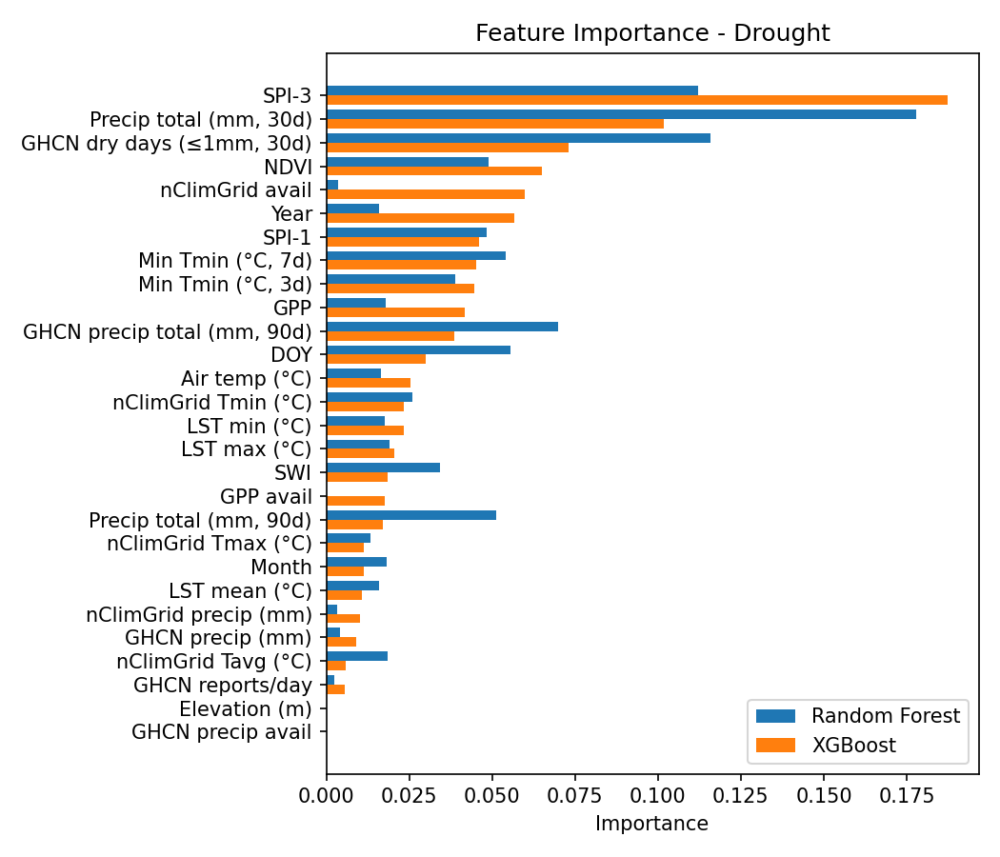

Frost & Drought Prediction with ML
Fine-scale forecasting with spatiotemporal ML and transfer learning (10–30 m).




Problem and motivation
Frost and drought drive major agricultural losses globally, but most operational tools still struggle to deliver field-level early warnings.
- Too coarse (often 1–50 km grids)
- Threshold-heavy and heuristic-driven
- Dependent on expensive on-site hardware
This project targets fine-scale risk forecasts at 10–30 m resolution using open data, strong feature engineering, and spatiotemporal deep learning with transfer learning.
Research objectives
Field-scale prediction
Forecast frost and drought risk at 10–30 m resolution, initially focused on diverse zones in the U.S. Great Plains.
Novel dataset creation
Build aligned tabular and raster/tensor datasets that fuse satellites, climate reanalysis, terrain, and engineered indicators for interpretability and spatiotemporal learning.
Modeling and accuracy
Compare Random Forest, XGBoost, and ConvLSTM (with transfer learning) for lead time and generalization, aiming for > 0.90 AUROC for both hazards.
Real-world usability
Serve forecasts through a bilingual Streamlit app with risk maps, time-series views, NDVI forecasts, and offline-friendly workflows.
Dataset composition
The dataset fuses multi-source remote sensing, reanalysis, and terrain at daily-to-weekly cadence (2020–2025). Two aligned versions are produced: a tabular dataset for interpretability and a raster/tensor dataset for ConvLSTM training.
| Source | Variables | Resolution |
|---|---|---|
| Sentinel-2 | NDVI, reflectance bands | 10 m |
| MODIS | LST day/night | 1 km |
| SMAP | Soil moisture (surface/root zone) | 9 km |
| MERRA-2 | Air temperature (min/max/mean) | 50 km |
| IMERG | Precipitation | 10 km |
| GRIDMET | Daily weather | 4 km |
| DEM (SRTM) | Elevation, slope | 30 m |
| GHCN | Ground truth precipitation (labels) | Station |
Labeling (frost)
Min temperature threshold + date alignment.
Labeling (drought)
Rolling 30-day quantile rule on GHCN precipitation (independent labels to avoid leakage from SPI).
Modeling approaches
Tabular models
- Random Forest
- XGBoost
- Chronological 70/15/15 split + walk-forward validation
- Bootstrap confidence intervals (n = 300)
Spatiotemporal deep learning (ConvLSTM)
- Multi-day raster patches (NDVI, LST, temp, precip, soil moisture)
- Patch-based training + masked loss for clouds/snow artifacts
- Multi-scale fusion of coarse + fine inputs
- Transfer learning from pretrained environmental backbones
Performance
Models are evaluated with AUROC, PR-AUC, and calibration (Brier score), using time-respecting validation to simulate deployment.
| Model | Risk type | AUROC | PR-AUC | Brier |
|---|---|---|---|---|
| RF | Frost | 0.974 [0.961–0.987] | 0.829 | 0.043 |
| XGBoost | Frost | 0.977 [0.965–0.989] | 0.788 | 0.040 |
| RF | Drought | 0.902 [0.870–0.934] | 0.366 | 0.053 |
| XGBoost | Drought | 0.943 [0.919–0.964] | 0.396 | 0.060 |
| ConvLSTM | Drought (NDVI proxy) | 0.951 | 0.407 | 0.041 |
| ConvLSTM | Frost (NDVI anomaly) | 0.986 | 0.841 | 0.039 |
In practice, ConvLSTM improved spatial smoothness and multi-day prediction behavior, while tabular models remained strong baselines with straightforward attribution.
Interpretability and diagnostics
SHAP analysis highlights which signals matter most:
- Frost: minimum temperature, slope, NDVI, day-of-year
- Drought: SPI-3, SWI, NDVI anomaly, cumulative precipitation
Deep models are inspected with saliency-style visualizations to identify the spatial patterns driving early warning signals.
Engineering methodology
- Automated pipeline that produces dual datasets (tabular + raster)
- Normalization fit on train split only
- Early stopping, dropout, constrained depth, and walk-forward validation
- Resampling + downscaling harmonization across sources
- Bilingual web app for maps, timelines, downloads, and offline-friendly usage
Applications
Precision agriculture
Plot-scale alerts to guide irrigation timing and frost protection decisions.
Crop insurance
Objective, high-resolution risk scores to support payout modeling.
Climate resilience
Early action for smallholders using free, open-access inputs.
Remote sensing and drones
Compatible with UAV imagery and onboard sensors for local refinement.
Conclusion
Fine-scale agricultural hazard forecasting is achievable with open data plus disciplined modeling: strong feature engineering, time-respecting validation, and spatiotemporal learning with transfer learning. This system merges interpretability and deployability to support real-world climate adaptation.